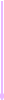

View my projects
View my mockup designs, desktop and mobile website prototypes. I also go into depth about my endeavors as well as what I've learned.
Welcome to my portfolio.
Here resides my digital life.
I am a spunky creative UX/UI designer and front end developer.
Pardon my pink and purple theme. I wanted to be different.
Scroll to view my projects.
An aspiring full stack developer, I went to CUNY NYC College for Computer Science. After I graduated, I've worked in the quality assurance field in medical manufacturing and after a while sought for computers instead of electrical engineering. While I enjoy hands-on-work, I've always had a creative itch. Now, I'm currently turning my creative ideas into digital media for the world to see. I'm embarking on my full stack journey!
Email: kadypril@hotmail.com
LinkedIn